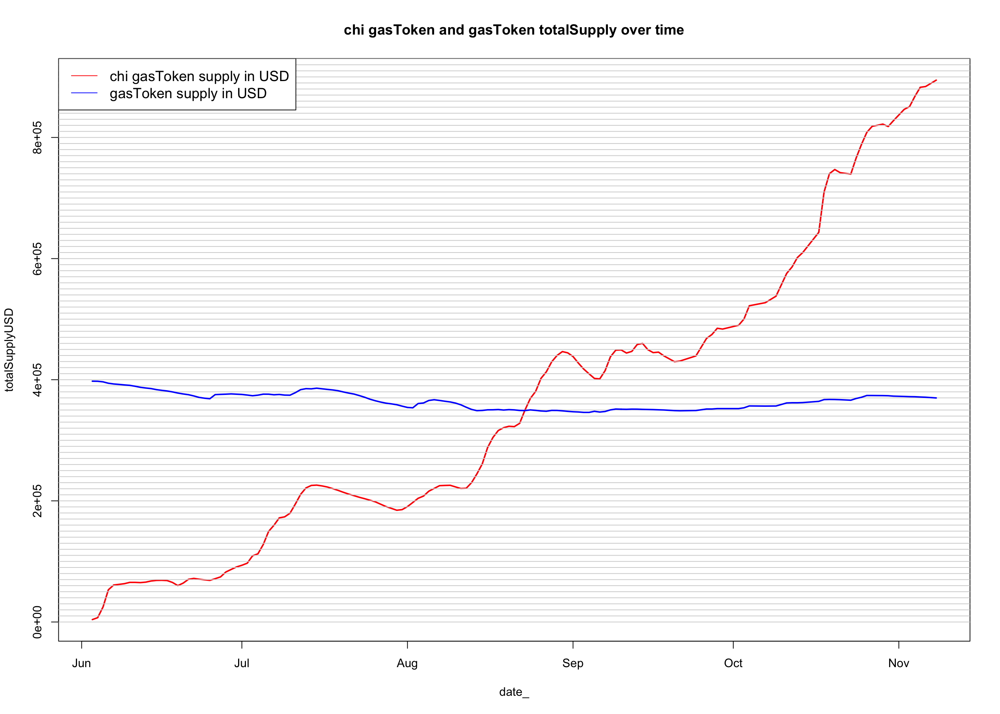

‘’’{txt} with t as ( SELECT date(block_timestamp) as date_, to_address, output, cast(output as int64) as supply FROM bigquery-public-data.crypto_ethereum.traces WHERE DATE(block_timestamp) >= “2020-05-01” and to_address in (“0x0000000000b3f879cb30fe243b4dfee438691c04”, “0x0000000000004946c0e9f43f4dee607b0ef1fa1c”) and status=1 and substr(input, 1, 10) in (“0x18160ddd”) ) select to_address, date_, round(avg(supply)) as supply from t group by to_address, date_ order by to_address, date_ ‘’’
require(data.table)## Loading required package: data.table## Warning: package 'data.table' was built under R version 3.5.2t = fread("/Users/henry/Desktop/perso/eth0/gasprice/gasToken/gasTokens-totalSupply.csv")
t[, date_ := as.Date(date_)]
# PLOT #1
# -------
t[to_address=="0x0000000000004946c0e9f43f4dee607b0ef1fa1c", plot(date_, supply, type="l", col="red", lwd=2
, main="chi gasToken and gasToken totalSupply over time")]## NULLfor(i in seq(0,5e6,1e5)) abline(h=i, col="lightgray")
t[to_address=="0x0000000000b3f879cb30fe243b4dfee438691c04", lines(date_, supply, col="blue", lwd=2)]## NULLlegend("topleft", legend=c("chi gasToken supply", "gasToken supply"),
col=c("red", "blue"), lty=1:1, cex=1.2)t$usd = 0
t[to_address=="0x0000000000004946c0e9f43f4dee607b0ef1fa1c", usd := 0.27]
t[to_address=="0x0000000000b3f879cb30fe243b4dfee438691c04", usd := 0.19]
t[, totalSupplyUSD := usd * supply]
# PLOT #2
# -------
t[to_address=="0x0000000000004946c0e9f43f4dee607b0ef1fa1c", plot(date_, totalSupplyUSD, type="l", col="red", lwd=2
, main="chi gasToken and gasToken totalSupply over time")]## NULLfor(i in seq(0,2e6,1e4)) abline(h=i, col="lightgray")
t[to_address=="0x0000000000b3f879cb30fe243b4dfee438691c04", lines(date_, totalSupplyUSD, col="blue", lwd=2)]## NULLlegend("topleft", legend=c("chi gasToken supply in USD", "gasToken supply in USD"),
col=c("red", "blue"), lty=1:1, cex=1.2)
# compare to mint
# ---------------
t = fread("/Users/henry/Desktop/perso/eth0/gasprice/gasToken/gasTokens-totalSupply.csv")
m = fread("/Users/henry/Desktop/perso/eth0/gasprice/gasToken/gasTokens-transactions-recap.csv")
mint_chi = m[to_address=="0x0000000000004946c0e9f43f4dee607b0ef1fa1c"][method=="mint"]
mint_std = m[to_address=="0x0000000000b3f879cb30fe243b4dfee438691c04"][method=="mint"]
t_chi = t[to_address=="0x0000000000004946c0e9f43f4dee607b0ef1fa1c"]
mint_chi[, totalMinted := cumsum(tokens)]
mint_std[, totalMinted := cumsum(tokens)]
setkey(mint_chi, date_)
setkey(t_chi, date_)
r_chi = mint_chi[t_chi]
r_chi[, date_ := as.Date(date_)]
r_chi[, totalBurned := totalMinted - supply]
# PLOT #3
r_chi[, plot(date_, totalMinted, type="l", lwd=2, col="green", main="chi gasToken - minted, burned, and totalSupply")]## NULLfor(i in seq(0,6e6,1e5)) abline(h=i, col="lightgray")
r_chi[, lines(date_, supply, lwd=2, col="blue")]## NULLr_chi[, lines(date_, totalBurned, lwd=2, col="red")]## NULLlegend("topleft", legend=c("tokens minted (cumulative)", "total supply", "tokens burned (cumulative)"),
col=c("green", "blue", "red"), lty=1:1, cex=1.0)# ----------
r_chi[, minted := totalMinted - shift(totalMinted, type="lag", 1)]
r_chi[, burned := totalBurned - shift(totalBurned, type="lag", 1)]
# PLOT #4
r_chi[, plot(date_, minted, type="l", lwd=2, col="green", ylim=c(0, 2e5), main="chi gasToken - minted, burned")]## NULLfor(i in seq(0,1e6,1e4)) abline(h=i, col="lightgray")
r_chi[, lines(date_, burned, col="red", lwd=2)]## NULLlegend("topleft", legend=c("tokens minted", "tokens burned"),
col=c("green", "red"), lty=1:1, cex=1.0)# =============================
# https://etherscan.io/address/0x0000000000004946c0e9f43f4dee607b0ef1fa1c#readContract
# on 8 Nov:
# totalMinted = 5244959
# totalBurned = 1913657